Release 0.68.0
What changed in Atlas 0.68.0
Atlas 0.68 comes as a desktop app, reads a repository a hundred times faster the second time, and draws what your code does more faithfully: which way data goes, which figures a program makes, and how it can fail.
Atlas Studio: Atlas as an app
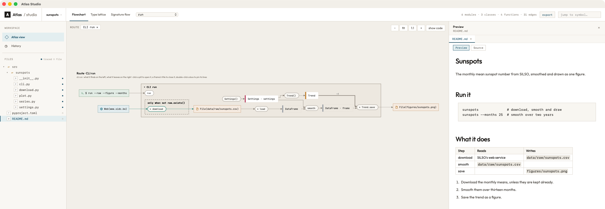
- 🦀 A desktop app for macOS and Windows, built with Tauri around Atlas's own Rust engine.
- Your workspaces remembered: ⌘O (Ctrl+O on Windows), or File › Open Recent.
- Your files as Atlas reads them: a file Atlas traced opens where the picture has it.
- Markdown, HTML and PDF previewed beside the picture.
- Your own terminal, in the workspace.
- Studio tells you when a new version is out, and shows what changed.
- Themes for light and for dark: Atlas, Catppuccin, Dracula, GitHub, Gruvbox, Nord, Solarized; ⇧⌘L switches.
Download Atlas Studio, or install it from a terminal. On macOS:
sh -c "$(curl -fsSL https://raw.githubusercontent.com/raoulg/atlas/main/install-studio.sh)"On Windows, in PowerShell:
irm https://raw.githubusercontent.com/raoulg/atlas/main/install-studio.ps1 | iexOr with Homebrew (macOS):
brew install --cask raoulg/tap/atlas-studio#188, #194, #195, #196, #199, #201, #205, #206, #208, #209, #210, #215, #219, #221, #223, #224
A hundred times faster, the second time
Atlas keeps an index of what it read of a repository, and reads again only what changed. While it reads, a bar shows how far it is, first the code and then its libraries, each estimated from how long the last readings took.
Which way data goes
A request that deletes, posts or puts sends something to the web. Atlas drew it as reading from the web; now it stands on the side where the program leaves something behind. And a step called in a loop that may write a place and then reads it stands on both sides of it: a later round writes over what an earlier one found.
"""Cancel an order on the shop's server."""
import requests
def cancel(order: int) -> None:
requests.delete(f"https://shop.example/orders/{order}")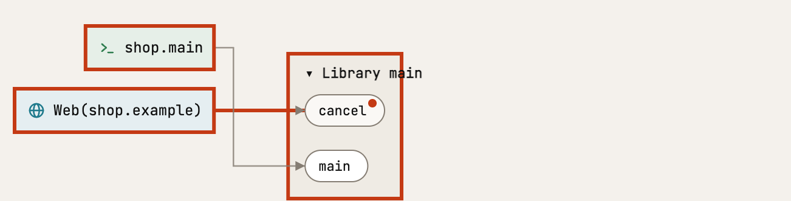
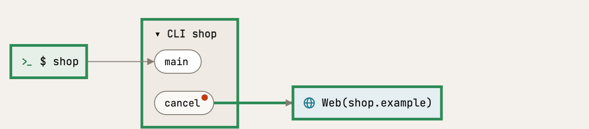
Where your files are, in words
A file place says where it is in words, from the file up: every *.gml in each IO-*/ in each folder in assets/regelingen/ rather than */IO-*/*.gml. A folder the code leaves open keeps the name the code gives it ({$REPORT_DIR}/report.txt), so two different folders stay two boxes.
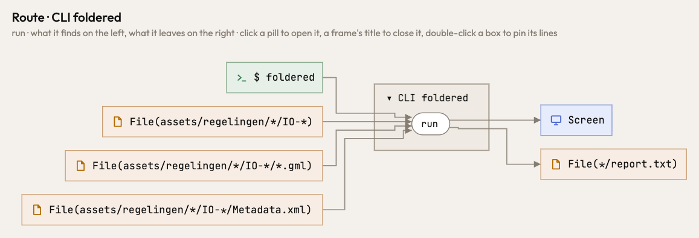
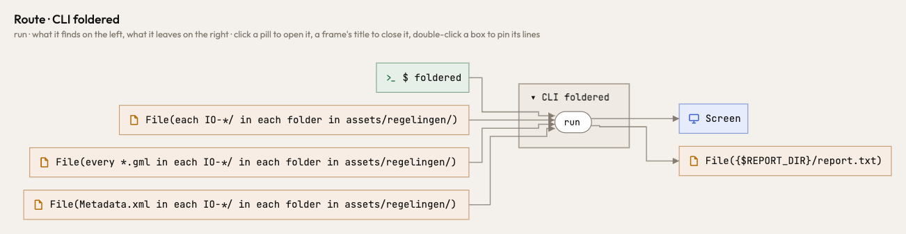
The figures a program makes
Two plots are two figures. Atlas missed both subplots calls and saw an Axes come from nowhere; now it draws each figure where it is made, and what becomes of it.
"""Two plots of the same numbers, each saved as a file of its own."""
import matplotlib.pyplot as plt
def plots(xs: list[float], ys: list[float]) -> None:
line, ax = plt.subplots()
ax.plot(xs, ys)
line.savefig("line.png")
spread, ax2 = plt.subplots()
ax2.hist(ys)
spread.savefig("spread.png")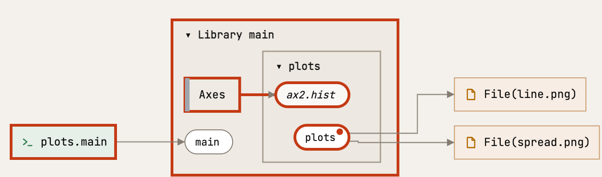
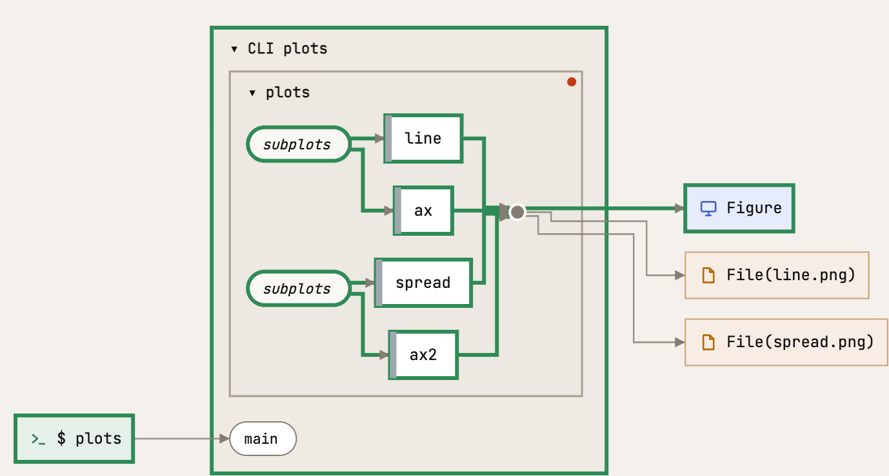
#11, #175, #172, #173, #174, #176, #178, #179, #184, #157, #127, #128, #129
How a program can fail
An error is something a function hands on. Atlas lost it where it was raised; now you see it reach the end of the route, so you can see how your program can stop.
"""Add up the numbers in a file, one per line."""
def parse(line: str) -> int:
if not line.strip():
raise ValueError("an empty line")
return int(line)
def total(path: str) -> int:
with open(path) as f:
return sum(parse(line) for line in f)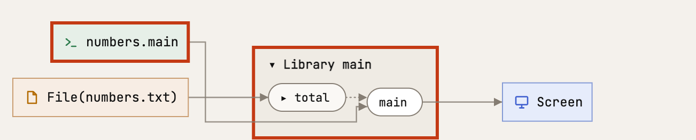
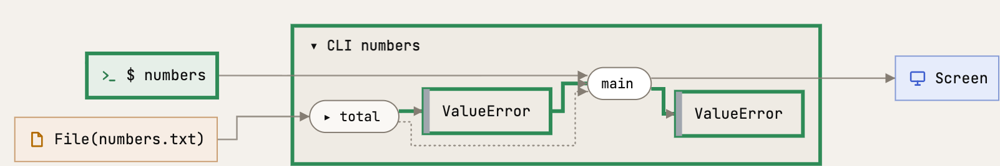
Zoom in, and nothing else moves
Open a box to see inside it: the rest of the picture stays exactly as it was. Every picture is the same plan seen at a different depth. Atlas tests it for every box of its test programs, and samples it on real ones every night.
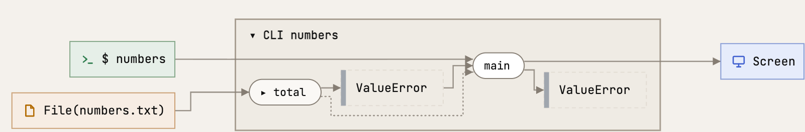
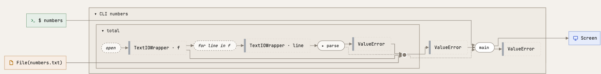
#49, #52, #65, #66, #67, #70, #71, #72, #73, #90, #93, #214, #217
When the code is right as it is
Sometimes code breaks a principle on purpose. Say so beside it, with your reason, and atlas check stops asking: what you answered is set aside and counted, never hidden. A decision that no longer answers anything is asked about in turn.
Why you can trust the picture
atlas check now asks only what each of its rules claims, so a question is worth reading.
And Atlas holds itself to its own mathematics. Each principle it follows is a law, and where it can, Atlas makes the law true by construction: one function that every picture uses keeps it, and that function is tested. Where a law cannot be guaranteed that way, it is tested from both sides: 28 of the 31 notions of Atlas's mathematics are held by tests that compute both routes, on every opening of small programs and on graphs drawn at random, or that tell a clean program from its shortcut. 11 of them are also asked every night of real code bases, at places drawn at random within a time budget; a place that breaks comes back with its seed. What the picture shows is what the code does.
#77, #78, #79, #80, #81, #82, #83, #84, #85, #86, #87, #88, #89, #204, #212, #216